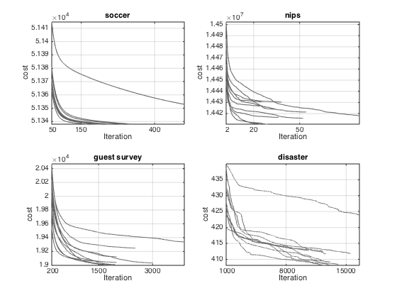

Plot convergence curves for PAA
Additional info: Figures 9 in article Probabilistic Archetypal Analysis by Seth and Eugster in Machine Learning Journal
Copyright Sohan Seth sohan.seth@hiit.fi
verbose = false; figure('papertype', 'a4', 'paperposition', [0 0 7 3.5]) datasetList = {'soccer', 'nips', 'guest survey', 'disaster'}; for dataset = datasetList switch char(dataset) case 'soccer' filePath = '../../examples/archeplayers/result_soccer/result_arch_4_trial_'; MIN = 50; XTICK = [MIN, 150, 400]; case 'nips' filePath = '../../examples/NIPS/resultEM/result_arch_10_trial_'; MIN = 2; XTICK = [MIN, 20, 50]; case 'guest survey' filePath = '../../examples/GSAW97/result/result_arch_6_trial_'; MIN = 200; XTICK = [MIN, 1500, 3000]; case 'disaster' filePath = '../../examples/Disaster/results/resultDisaster_arch_10_trial_'; MIN = 1000; XTICK = [MIN, 8000, 15000]; end if 0 %exist('data_Covergence') objList = cell(10, 1); for countTrial = 1:10 load(sprintf('%s%d.mat', filePath, countTrial)); if strcmp(char(dataset), 'nips') | strcmp(char(dataset), 'soccer') obj = -obj; end obj([false; abs((obj(1:end-1) - obj(2:end))./obj(1:end-1)) < 10^-6.5]) = []; objList{countTrial}.x = MIN:length(obj); objList{countTrial}.y = obj(MIN:end); if verbose fprintf('threshold reached? %d\n', ... abs((obj(end) - obj(end-1)) / obj(end - 1)) < 10^-6) end end save(sprintf('data_Convergence/%s', char(dataset)), 'objList') else load(sprintf('data_Convergence/%s', char(dataset)), 'objList') end subplot(2, 2, find(strcmp(dataset, datasetList))), hold on for countTrial = 1:10 plot(objList{countTrial}.x, objList{countTrial}.y, ... 'color', [1 1 1] * 0.4) end axis tight set(gca, 'fontsize', 10, 'xtick', XTICK, ... 'xticklabel', num2str(XTICK'))%, 'yscale', 'log') xlabel('Iteration'), ylabel('cost'); title(dataset) box on, grid on end % print('-dpng','-r400','../../Paper-NIPS-ICML-arXiv-KDD-ML/convergence.png') % saveas(gca, '../../Paper-NIPS-ICML-arXiv-KDD-ML/convergence.eps', 'epsc')
close all